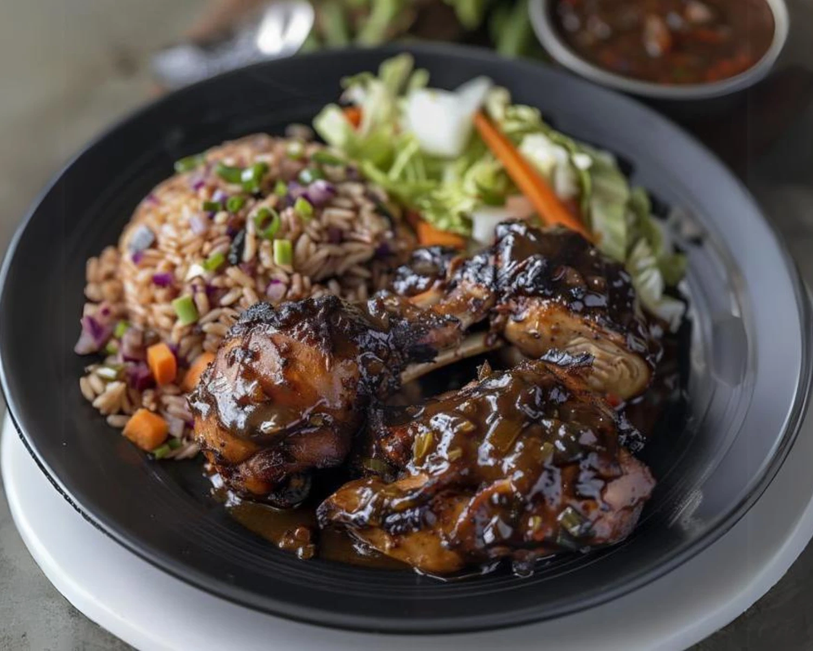

Jerk Pork Recipe
Home

Jamaican Jerk Dish
Ingredients
For the Jerk Marinade:
- 1 cup water
- 8 to 12 ounces Scotch bonnet peppers (227-340 g), stemmed
- 6 ounces (170 g) scallions (about 3 bunches), ends trimmed and roughly chopped
- 4 ounces fresh ginger (113 g), peeled and roughly chopped
- 1/2 medium yellow onion (4 ounces; 113 g), roughly chopped
- 1 whole head garlic (about 1 1/2 ounces; 45 g), cloves peeled
- 1/4 cup Diamond Crystal kosher salt (1 1/4 ounces; 36 g); for table salt, use half as much by volume or the same weight
- 1 ounce (28 g) fresh thyme sprigs (about 1/4 cup), thicker woody stems removed
- 2 tablespoons whole allspice berries
- 2 tablespoons (30 ml) browning, such as Grace brand
For the Jerk Pork:
- 1 (6 to 8 pound; 2.7 kg to 3.6 kg) skin-on bone-in pork butt (bone-in shoulder roast)
- Kosher salt and freshly ground black pepper
- 2 cups (473 ml) jerk marinade
- 1 bunch (about 2 loosely packed cups) fresh allspice leaves (or fresh bay or banana leaves), soaked in water for 10 minutes, drained, then bruised with a back of a knife
- 4 Pimento wood chunks, briquettes, or 2 cups wood chips, soaked in water for 10 minutes then drained
Directions
- For the Jerk Marinade: In a blender, combine water, Scotch bonnet peppers, scallions, ginger, onion, garlic, salt, thyme springs, allspice berries and browning, if using. Blend into a smooth puree, (in batches if needed), about 1 minute.
- In a medium saucepan, bring jerk marinade to a boil over high heat, then reduce heat and simmer until reduced to a paste-like consistency and measures about 3 1/2 cups, about 20 minutes.
- Remove from heat and let cool, about 1 hour at room temperature, then refrigerate in an airtight container until ready to use.
- For the Jerk Pork: Using a sharp paring knife, Cut through one side of the pork shoulder to the bone, following the length of the bone. Cut around the bone and keep cutting to within an inch of the other side of the shoulder. Open the pork shoulder flat like a book. Cut under the bone and remove it to finish butterflying the roast open. The roast should now be splayed flat and measure about 3-inches thick.
- With the pork shoulder butterflied open skin-side up on the cutting board, use a sharp knife to score the skin 1/2 -inch deep and 1- inch apart to create evenly spaced parallel cuts. Flip pork over and repeat on the flesh side.
- Season pork lightly all over with salt and pepper. Transfer pork to a large baking dish (9 by 13-inch) or a half-hotel pan. Using gloved hands, rub 2 cups of the jerk marinade all over pork, making sure to get some inside cuts and crevices. Next, rub bruised pimento (or bay or banana) leaves between your hands to release the natural oils, then rub leaves all over the marinated pork on all sides. Cover and refrigerate for at least 12 or up to 24 hours.
- For a Charcoal Grill: Light a chimney full of charcoal briquettes (about 6 quarts). When all charcoal is lit and covered with gray ash, pour out and arrange coal on one side of charcoal grate. Set cooking grate in place, cover grill, and allow to preheat for 5 minutes. Clean and oil grilling grate. Cover grill and wait until temperature falls to about 300°F (150°C), adding chunks of wood (or wood briquettes or chips) when at temperature. (Follow here for how to set up a kettle grill with indirect heat as a smoker.) When the wood is ignited and producing smoke, remove pork from marinade, letting excess marinade drip off into pan, then transfer to grill (on cooler side if cooking with indirect heat) skin side up. Cover with the pimento leaves from the marinade, and close the lid. Cook, undisturbed, until the meat begins to caramelize and char on the bottom side, about 1 hour.
- Remove the leaves, turn pork skin side down, then reposition on the cooler side of the grill and re-cover with the leaves. Continue to cook, covered, until beginning to char on the now-bottom side of the pork, about 1 hour. (Adjust heat by adding coals and/or adjusting the air vents to maintain grill temperature around 300℉ (150°C).) Add extra wood chunks to coals as needed to maintain smoke.)
- Remove the leaves, flip pork, keeping on the cooler side of the grill, re-cover with the leaves, and continue to cook until pork is well charred all over and interior reaches 185°F (85°C), 1 to 2 hours longer, flipping pork and repositioning leaves as needed for even charring.
- Transfer pork to a work surface, discard leaves, and let rest for 30 minutes. Slice pork into thick slices or chop in rough chunks, which is how they serve it in Jamaica.
- Serve with festival, pickled Scotch bonnet peppers, and ketchup on the side.